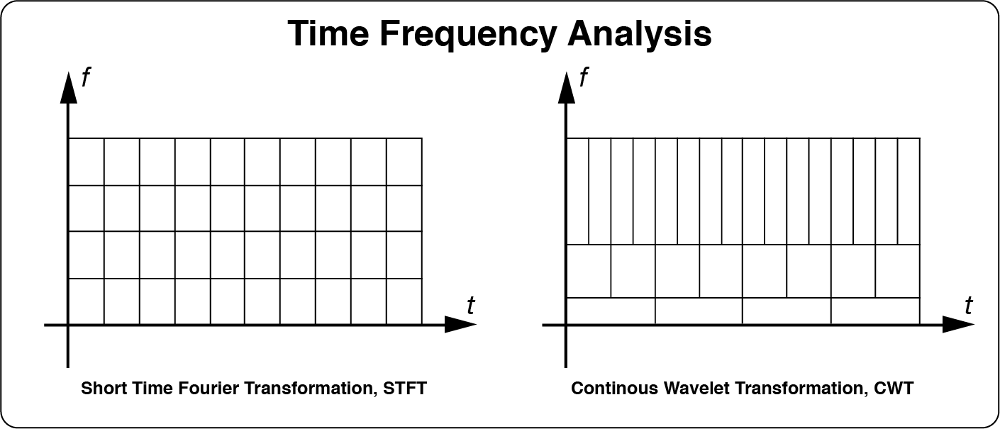
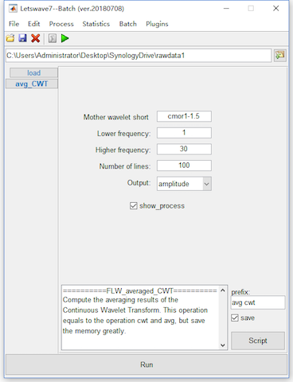
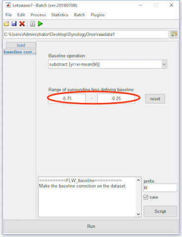

General Information
Time frequency decomposition describes the change of the non-stationary EEG signal in frequency domain with the increase of time. Letswave7 provides two ways for time-frequency analysis, which are STFT (short time Fourier transform) and CWT (continues wavelets transform). STFT is compute the Fourier transform separately on each shorter segment. Hence the window length for each frequency band is the same in the STFT, which would be too short to have an accurate estimation in the lower frequency band but too long for the high frequency band to catch the nonstationary activity. Different for STFT, CWT uses different window length for different frequency band. Hence, CWT would have both good frequency resoluation for low frequency activity, and good time resoluation for high regruency activity.

Normally, we can do the time frequency analysis before or after the time domain averaging. For time frequency decomposition before the time domain averaging, the non-phase-locked activity could be observed, but the signal would be more noise. The time frequency decomposition after the time domain averaging normally have a better signal noise ration, but the non-phase-locked activity will be lost.
Step 12: Continous Wavelet Transform
Here, we will show the use of CWT for time frequency analysis before the time domain averaging. Select the datasets “bl reref ep_S 9 sp_filter ica chan_interp butt sel_chan sub093” and “bl reref ep_S 10 sp_filter ica chan_interp butt sel_chan sub093”, and click Plugins->my_tfa->Averaged CWT in the menu. Keep the dafault parameter setting in the batch module, and click the button Run in the bottom of batch module for the time frequency analysis. Two new datasets with the name “avg cwt bl reref ep_S 9 sp_filter ica chan_interp butt sel_chan sub093” and “avg cwt bl reref ep_S 10 sp_filter ica chan_interp butt sel_chan sub093” will be appeared in the data list of the manager module.

In fact, the operation of Plugins->my_tfa->Averaged CWT combines the steps of CWT and averaging together, which can be performed by Process->Frequency analysis and filters->CWT (Continous Wavelet Transform), and Process->Average->Compute averag, std, median across epoches respectively in the menu. Since the time frequency analysis is time consuming and also need a larger space for storage, the computer with small memory would be easy go to the error of “out of memory”. Hence we combine the steps of time frequency analysis and averaging together for saving the storage space.
Step 13: Baseline Correction
After the time frequency analysis, we also need to do the baseline correction time-frequency domain as it is in time domain. Select the datasets avg cwt bl reref ep_S 9 sp_filter ica chan_interp butt sel_chan sub093” and “avg cwt bl reref ep_S 10 sp_filter ica chan_interp butt sel_chan sub093”, and click Process->Baseline operation->Baseline correction in the menu.
It is suggest to shrink the inverval for baseline correction in time-frequency domain. Hence, we set the -0.75 to -0.25 seconds as the baseline in the bacth module. In time-frequency domain, several methods, like , can be used as baseline correction. Here, we use the default method, substraction.
Click the button Run in the bottom of batch module for baseline correction. Two new datasets with the name “bl avg cwt bl reref ep_S 9 sp_filter ica chan_interp butt sel_chan sub093” and “bl avg cwt bl reref ep_S 10 sp_filter ica chan_interp butt sel_chan sub093*” will be appeared in the data list of the manager module.

View the Result
Select datasets “bl avg cwt bl reref ep_S 9 sp_filter ica chan_interp butt sel_chan sub093” and “bl avg cwt bl reref ep_S 10 sp_filter ica chan_interp butt sel_chan sub093”. Click the view in the right-click menu, we can see the time frequency domain result in the multiviewer for the waveform.
Set the separate graphs(columns) as datasets, select both the two datasets, select channel Pz, and set color range from -10 to 10, we can see the result of P300 on Pz in time-frequency domain.
Open the topography and set the cursor to x=0.35, and y=3, we can observe the phase-locked P300 activity on the topography. Set the cursor to x=1, and y=4, the topography of a Event Related Desynchronization (ERD) acticity can be observated, which is a non-phase-locked response.


Until now, we finised the tutorial on the single subject analysis. For the multiple subject analysis, see the next part of tutorial.